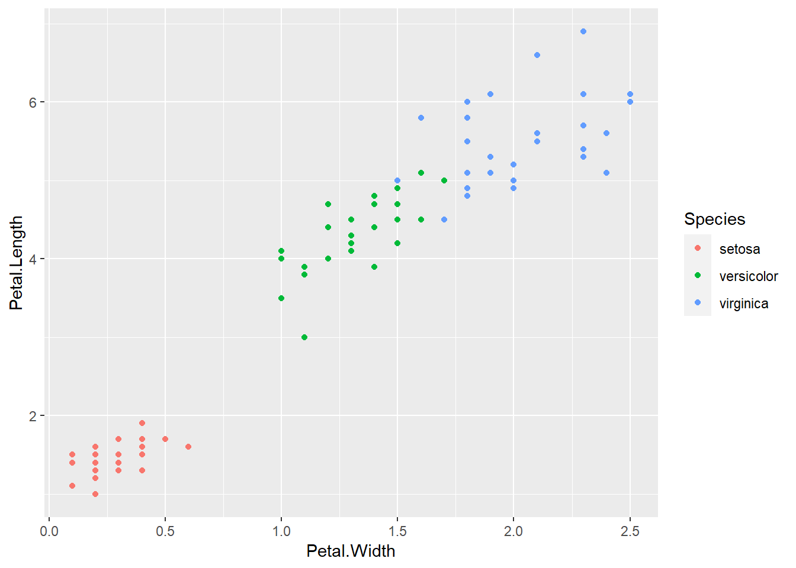
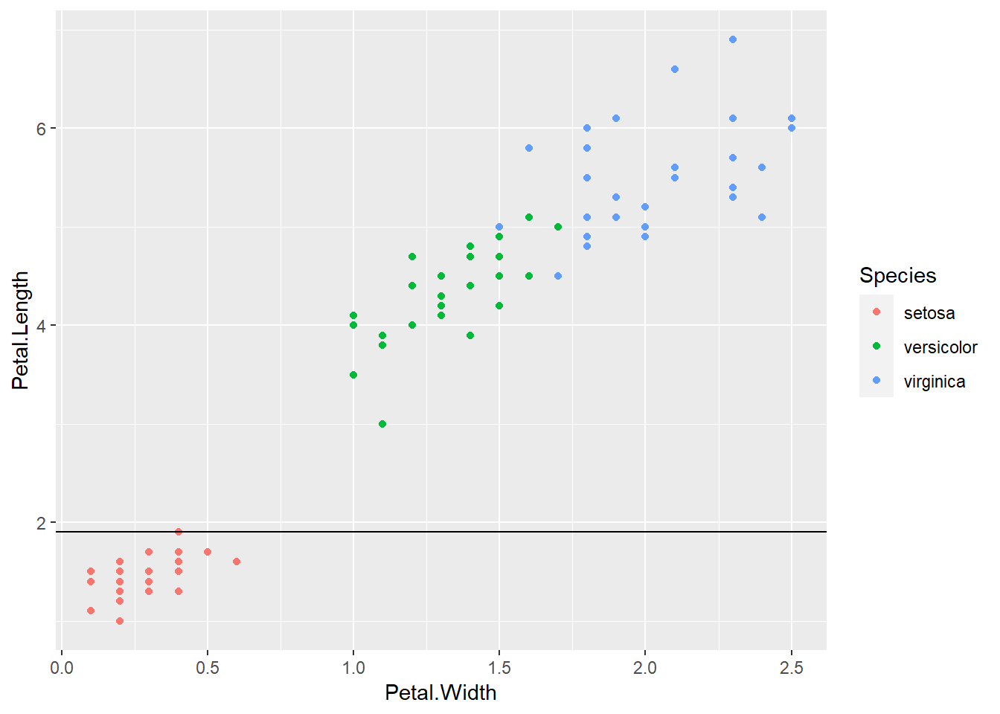
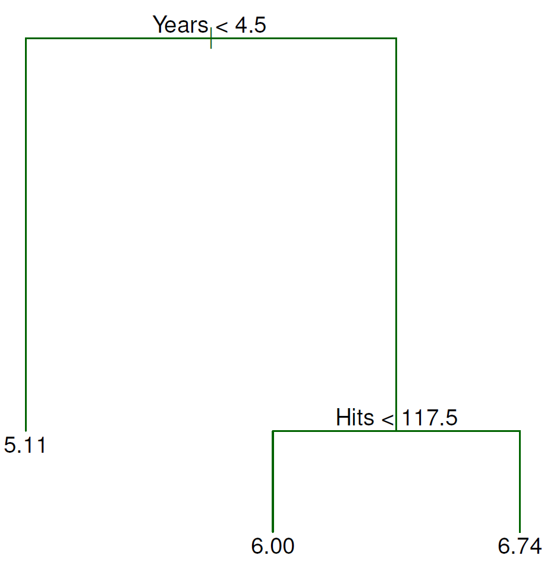
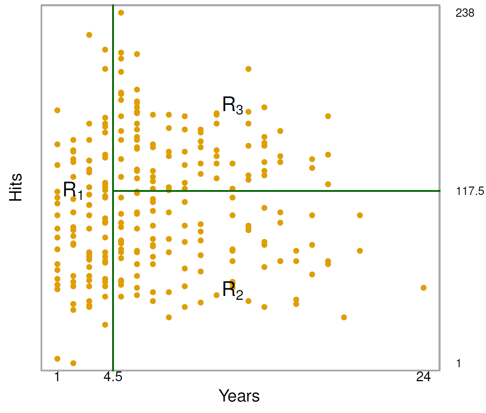
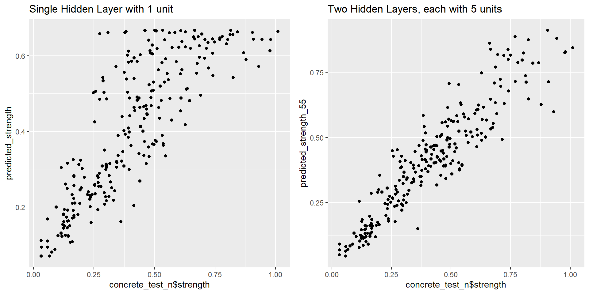
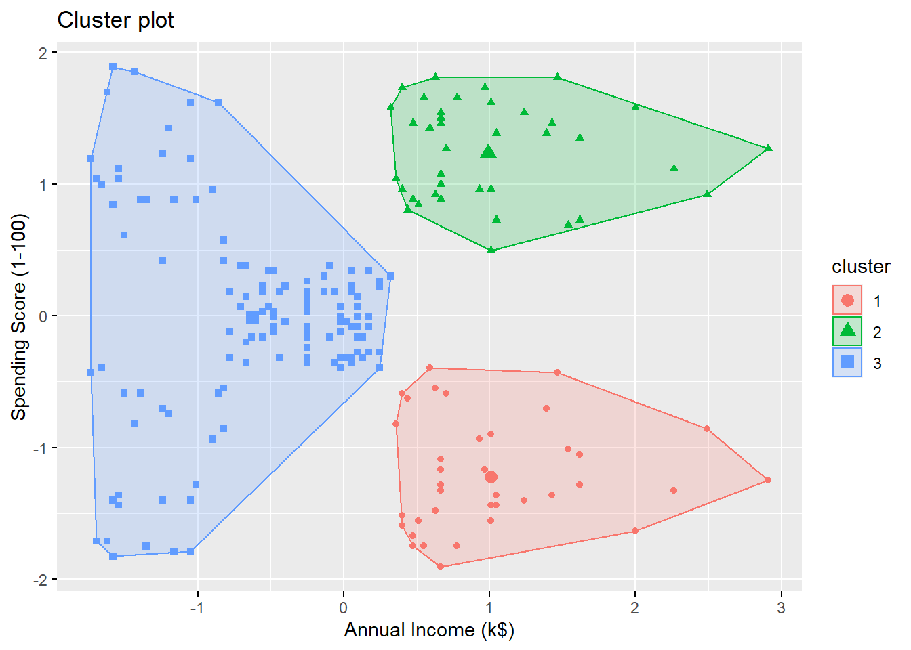
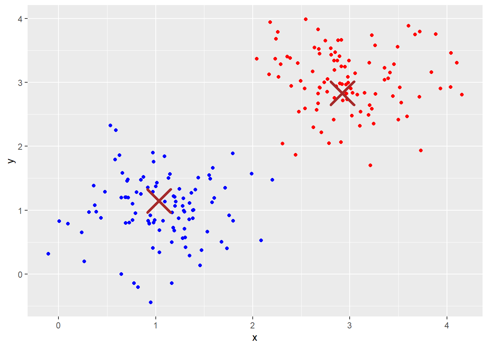
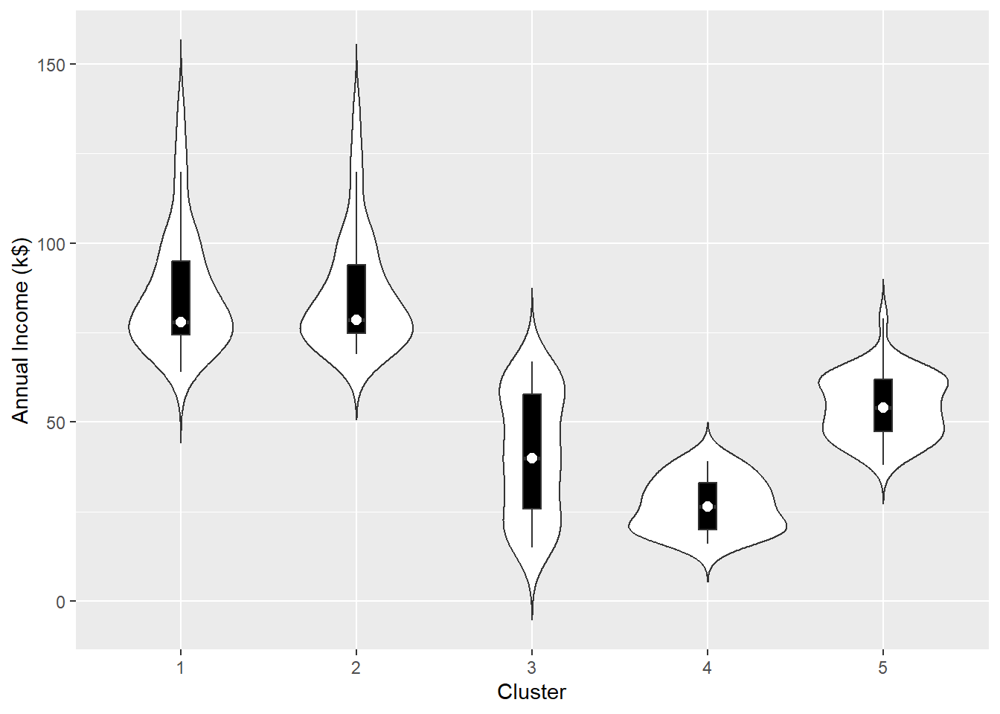

Chapter 18 Decision Trees
Reference: Ch8 in An introduction to Statistical Leraning with applications in R by James, Witten, Hastie and Tibshirani.
In this chapter, we will load the following packages:
Decision trees involve stratifying or segmenting the predictor space into a number of simple regions
To make a prediction for a new observation, we typically use the mean (for continuous response) or mode (for categorical response) response value of the training observations in the region to which the new observation belongs
Since the set of splitting rules used to segment the predictor space can be summarized in a tree, these types of approaches are known as decision tree methods.
Decision trees can be applied to both regression and classification problems
- classification tree - for categorical outcomes
- regression tree - for continuous outcomes
A key advantage of the decision tree is its interpretability (compared with other “black box” models, see Ch20).
18.1 Introduction to Classification Tree
Below is a simplified example of determining if you should accept a new job offer using a tree representation.

In each branching node of the tree, a specific feature of the data is examined. According to the value of the feature, one of the branches will be followed.
The leaf node represents the class label.
In the above example, the leaf nodes are “Decline offer” and “Accept offer”.
The paths from the root to leaf node represent classification rules.
Consider the iris dataset, which is available in base R. We have \(150\) observations and \(5\) variables named Sepal.Length, Sepal.Wdith, Petal.Length, Petal.Width, and Species.
Let’s take a look at the data.
str(iris)
## 'data.frame': 150 obs. of 5 variables:
## $ Sepal.Length: num 5.1 4.9 4.7 4.6 5 5.4 4.6 5 4.4 4.9 ...
## $ Sepal.Width : num 3.5 3 3.2 3.1 3.6 3.9 3.4 3.4 2.9 3.1 ...
## $ Petal.Length: num 1.4 1.4 1.3 1.5 1.4 1.7 1.4 1.5 1.4 1.5 ...
## $ Petal.Width : num 0.2 0.2 0.2 0.2 0.2 0.4 0.3 0.2 0.2 0.1 ...
## $ Species : Factor w/ 3 levels "setosa","versicolor",..: 1 1 1 1 1 1 1 1 1 1 ...The first four variables are numeric features of the flowers. The last column in the dataset is the species of the flower. We will illustrate how to use the numeric features of the flowers to classify the flowers.
First, we will split the dataset into a training dataset and a testing dataset. For the moment, we will only use the training dataset.
set.seed(6)
random_index <- sample(nrow(iris), 100) # select 100 examples for our training dataset
iris_train <- iris[random_index, ]
iris_test <- iris[-random_index, ]It can be helpful to look at the scatterplot matrix when you wish to look at the relationship between each pair of variables. To create a scatterplot matrix, we can use pairs (base R graphics) or ggpairs (in the package GGally).
With pairs():
# we only want to plot the numeric features
# the 5th column is the species of the flowers
pairs(iris_train[, -5])
With ggpairs(), you can also visualize an additional category by specifying color = with your variable describing the category.
library(GGally) # to use ggpairs, install it first if you haven't done so
ggpairs(data = iris_train, aes(color = Species, alpha = 0.8), columns = 1:4)
In the above code:
columns = 1:4tells the function only uses the first \(4\) columns of the dataset for plotting.color = Speciesindicates that we map the color to the variableSpeciesalpha = 0.8controls the level of transparency so that the density estimates do not overlap each other completely
From the plots, it seems that the variable Petal.Width and Petal.Length will be useful in classifying the flowers. Let’s focus on the scatterplot of these two variables.
From the above plot, we see that we can easily classify the flowers with high accuracy using these two features. For example, if we draw the horizontal line \(y = 1.9\), we could classify any iris lying on or below this line as setosa with \(100\%\) accuracy.

Next, we draw the vertical line \(x = 1.7\). We could classify any iris lying on or to the left of this line as versicolor.

We get a pretty good classification with only 3 mistakes.
The above classification is an example of classification trees (because the outcome is categorical) and can be visualized as

18.2 Introduction to regression tree
To describe the regression trees, we consider the dataset Hitters from the package ISLR2, a baseball player dataset with \(322\) observations of major league players from the 1986 and 1987 seasons. In this dataset, there are \(20\) variables.
library(ISLR2)
str(Hitters)
## 'data.frame': 263 obs. of 20 variables:
## $ AtBat : int 315 479 496 321 594 185 298 323 401 574 ...
## $ Hits : int 81 130 141 87 169 37 73 81 92 159 ...
## $ HmRun : int 7 18 20 10 4 1 0 6 17 21 ...
## $ Runs : int 24 66 65 39 74 23 24 26 49 107 ...
## $ RBI : int 38 72 78 42 51 8 24 32 66 75 ...
## $ Walks : int 39 76 37 30 35 21 7 8 65 59 ...
## $ Years : int 14 3 11 2 11 2 3 2 13 10 ...
## $ CAtBat : int 3449 1624 5628 396 4408 214 509 341 5206 4631 ...
## $ CHits : int 835 457 1575 101 1133 42 108 86 1332 1300 ...
## $ CHmRun : int 69 63 225 12 19 1 0 6 253 90 ...
## $ CRuns : int 321 224 828 48 501 30 41 32 784 702 ...
## $ CRBI : int 414 266 838 46 336 9 37 34 890 504 ...
## $ CWalks : int 375 263 354 33 194 24 12 8 866 488 ...
## $ League : Factor w/ 2 levels "A","N": 2 1 2 2 1 2 1 2 1 1 ...
## $ Division : Factor w/ 2 levels "E","W": 2 2 1 1 2 1 2 2 1 1 ...
## $ PutOuts : int 632 880 200 805 282 76 121 143 0 238 ...
## $ Assists : int 43 82 11 40 421 127 283 290 0 445 ...
## $ Errors : int 10 14 3 4 25 7 9 19 0 22 ...
## $ Salary : num 475 480 500 91.5 750 ...
## $ NewLeague: Factor w/ 2 levels "A","N": 2 1 2 2 1 1 1 2 1 1 ...
## - attr(*, "na.action")= 'omit' Named int [1:59] 1 16 19 23 31 33 37 39 40 42 ...
## ..- attr(*, "names")= chr [1:59] "-Andy Allanson" "-Billy Beane" "-Bruce Bochte" "-Bob Boone" ...We will consider the problem of predicting player’s Salary (in the log scale so that its distribution has more of a typical bell-shape) based on the other variables. In particular, to illustrate the regression trees, we shall first use only two variables Years and Hits.
Years: the number of years that the player has played in the major leagues
Hits: the number of hits that he made in the previous year
The following figure shows an example of regression tree using Years and Hits. The split at the top of the tree results in two large branches. The left-hand branch corresponds to Years < 4.5, and the right-hand branch corresponds to Years >= 4.5. The tree has two internal nodes and three terminal nodes, or leaves. The number in each leaf is the mean of the response for the observations that fall there.

For players with Years < 4.5, the mean log salary is \(5.11\) and so we make a prediction of \(e^{5.11}\) (thousands of dollars). Players with Years >= 4.5 are assigned to the right branch, and that group is further subdidived by Hits. The prediction of salary for players with Years >= 4.5 and Hits < 117.5 is \(e^{6}\) and the prediction of salary for players with Years >= 4.5 and Hits >= 117.5 is \(e^{6.74}\).
The following figure shows that partition of the predictor space:

18.3 Mathematical Formulation
We first describe the regression tree. The idea behind a regression tree consists of two steps:
Divide the predictor space, which is the set of possible values for the \(p\) features \(X_1,\ldots,X_p\), into \(J\) distinct and non-overlapping regions \(R_1,\ldots,R_J\)
For each observation that falls into the region \(R_j\), we make the same prediction, usually using the mean of the response values for the training observations in \(R_j\) (because it minimizes the sum of squares error).
The first step is however computationally untractable if we allow arbitrary shapes of non-overlapping regions.
First simplification: divide the predictor space into high-dimensional rectangles or boxes only
The goal then is to find boxes \(R_1,\ldots,R_J\) that minimize the RSS \[\begin{equation*} \sum^J_{j=1} \sum_{i : x_i \in R_j} (y_i - \hat{y}_{R_j})^2, \end{equation*}\] where \(\hat{y}_{R_j}\) is the mean of the response for the training observation in \(R_j\).
Second simplification: since it is also computationally infeasible to consider every possible partition of the feature space into \(J\) boxes, we have to take a top-down, greedy approach that is known as recursive binary splitting.
Steps:
For any \(j\) and \(s\), define the pair of half-planes \[\begin{equation*} R_1(j, s) := \{X| X_j < s\} \text{ and } R_2(j, s) := \{X|X_j \geq s \}, \end{equation*}\] and we seek the value of \(j\) and \(s\) that minimize the expression \[\begin{equation*} \sum_{i: x_i \in R_1(j, s)} (y_i - \hat{y}_{R_1})^2 + \sum_{i : x_i \in R_2(j,s)} (y_i - \hat{y}_{R_2})^2, \end{equation*}\] where \(\hat{y}_{R_k}\) is the mean response for the training observations in \(R_k(j, s)\) for \(k=1,2\).
Next, we repeat the above process within each of the resulting regions.
The process continues until a stopping criterion is reached; for instance, we may continue until no region contains more than \(5\) observations.
Finally, tree pruning is performed to avoid the model becomes too complex, which overfits the training data and leads to poor test performance.
Remarks:
The idea of tree pruning is similar to regularization in Ch17. We add an additional tuning parameter that penalizes a tree with many terminal nodes (large tree) and find the optimal tuning parameter using cross-validation. The details are omitted.
We can grow a classification tree similar to a regression tree except that
- our prediction of each new observation is now the most commonly occurring class of training observations in the region to which it belongs
- we replace the RSS by classification error rate/ Gini index/ entropy (see the reference for details)
18.4 Examples
18.4.1 Classification Tree
Let’s begin with the iris dataset. To build a classification tree, we can use the function tree() from the package tree. The syntax of tree() is similar to that of lm().
library(tree)
# split the data into training data and testing data
set.seed(10)
index <- sample(nrow(iris), 100)
tree_iris <- tree(Species ~. , data = iris[index, ])
# display the result
tree_iris
## node), split, n, deviance, yval, (yprob)
## * denotes terminal node
##
## 1) root 100 217.70 virginica ( 0.29000 0.31000 0.40000 )
## 2) Petal.Length < 4.75 58 80.41 setosa ( 0.50000 0.50000 0.00000 )
## 4) Petal.Length < 2.5 29 0.00 setosa ( 1.00000 0.00000 0.00000 ) *
## 5) Petal.Length > 2.5 29 0.00 versicolor ( 0.00000 1.00000 0.00000 ) *
## 3) Petal.Length > 4.75 42 16.08 virginica ( 0.00000 0.04762 0.95238 )
## 6) Petal.Width < 1.75 5 6.73 virginica ( 0.00000 0.40000 0.60000 ) *
## 7) Petal.Width > 1.75 37 0.00 virginica ( 0.00000 0.00000 1.00000 ) *The summary() function lsts the variables that are used as internal nodes in the tree, the number of terminal nodes, and the (training) error rate.
summary(tree_iris)
##
## Classification tree:
## tree(formula = Species ~ ., data = iris[index, ])
## Variables actually used in tree construction:
## [1] "Petal.Length" "Petal.Width"
## Number of terminal nodes: 4
## Residual mean deviance: 0.07011 = 6.73 / 96
## Misclassification error rate: 0.02 = 2 / 100Plot the tree:

Prediction and accuracy:
# prediction
predict_iris <- predict(tree_iris, iris[-index, ], type = "class")
(result <- table(iris[-index, 5], predict_iris))
## predict_iris
## setosa versicolor virginica
## setosa 21 0 0
## versicolor 0 15 4
## virginica 0 1 9
# accuracy
sum(diag(result)) / sum(result)
## [1] 0.9Now, let’s consider Hitters dataset from the package ISLR2. We have used this dataset in Ch17. We will create an additional categorical variable indicating if Salary is higher than the upper quartile of Salary
library(ISLR2)
# remove rows with missing values
Hitters <- na.omit(Hitters)
# create an additional variable
Hitters$High <- factor(ifelse(Hitters$Salary >=
quantile(Hitters$Salary, 0.75), "High", "Low"))
# split the dataset
set.seed(1)
index <- sample(nrow(Hitters), nrow(Hitters) * 0.5)
Hitters_train <- Hitters[index, ]
Hitters_test <- Hitters[-index, ]# fit classification tree
fit <- tree(High ~. - Salary, data = Hitters_train)
summary(fit)
##
## Classification tree:
## tree(formula = High ~ . - Salary, data = Hitters_train)
## Variables actually used in tree construction:
## [1] "CAtBat" "CWalks" "AtBat" "Hits" "CRuns" "PutOuts" "Assists"
## Number of terminal nodes: 8
## Residual mean deviance: 0.3054 = 37.56 / 123
## Misclassification error rate: 0.08397 = 11 / 131
(result <- table(Hitters_test$High, predict(fit, Hitters_test, type = "class")))
##
## High Low
## High 20 12
## Low 13 87
sum(diag(result)) / sum(result)
## [1] 0.8106061The classification accuracy in the training data is \((131 - 11)/131 = 0.916\). The classification accuracy in the testing data is \(0.811\).
Visualize the classification rules using tree:

Let’s try to see if pruning the tree will improve the testing accuracy. Set FUN = prune.misclass to tell the function to use misclassification error as the evaluation metric in CV.
cv_fit <- cv.tree(fit, FUN = prune.misclass)
cv_fit
## $size
## [1] 8 4 3 1
##
## $dev
## [1] 27 27 20 40
##
## $k
## [1] -Inf 0 1 13
##
## $method
## [1] "misclass"
##
## attr(,"class")
## [1] "prune" "tree.sequence"
plot(cv_fit$size, cv_fit$dev, type = "b") 
size: number of terminal nodes of the tree
dev: cross-validation errors
We will choose the size with the minimum dev.
prune_fit <- prune.misclass(fit, best = 3)
(result <- table(Hitters_test$High, predict(prune_fit, Hitters_test, type = "class")))
##
## High Low
## High 21 11
## Low 16 84
sum(diag(result)) / sum(result)
## [1] 0.7954545For this particular example, the classification accuracy actually becomes lower when we prune the tree. However, the pruned tree has only \(3\) terminal nodes, which can be easier for interpretation.

18.4.2 Regression Tree
Fitting regression tree and finding the MSE in test data
# Fit regression tree
reg_tree <- tree(Salary ~. - High, Hitters_train)
# MSE in test data
mean((Hitters_test$Salary - predict(reg_tree, Hitters_test))^2)
## [1] 122872.5Tree without pruning

Use cross validation to determine the optimal choice of size (the number of terminal nodes)
set.seed(3) # the result of CV is also random because we partition the data randomly
cv <- cv.tree(reg_tree)
plot(cv$size, cv$dev, type = "b")
Prune the tree:
# best size
cv$size[which.min(cv$dev)]
## [1] 5
prune_reg_tree <- prune.tree(reg_tree, best = cv$size[which.min(cv$dev)])
# MSE in test data
mean((Hitters_test$Salary - predict(prune_reg_tree, Hitters_test))^2)
## [1] 122267.2Pruned tree:

The performance (in terms of MSE) of the pruned tree in test data is similar to the tree without pruning.